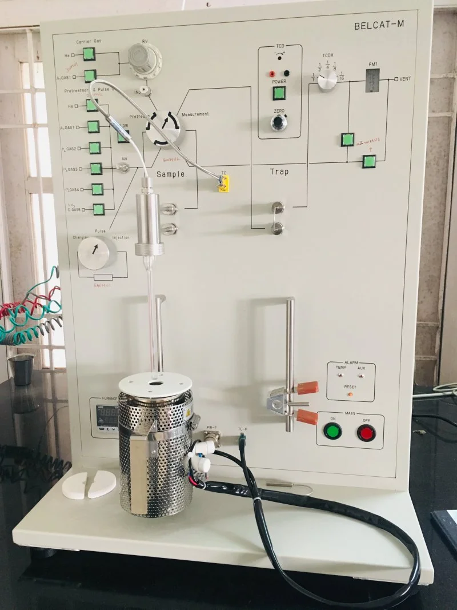
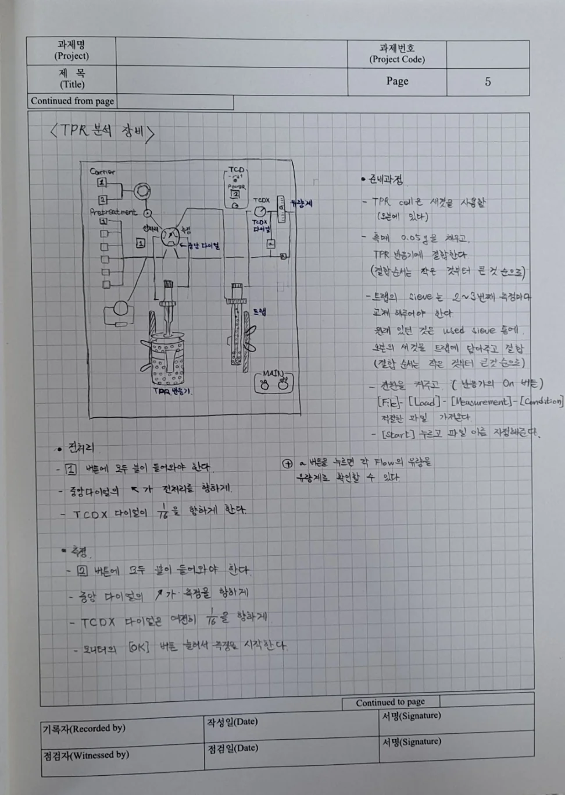
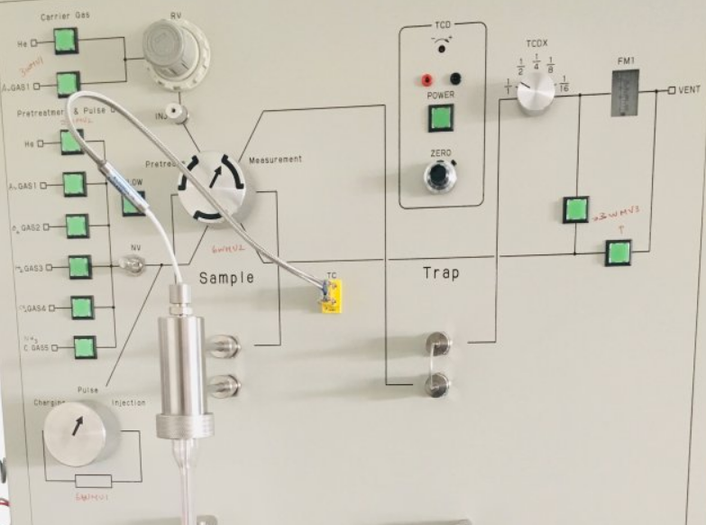
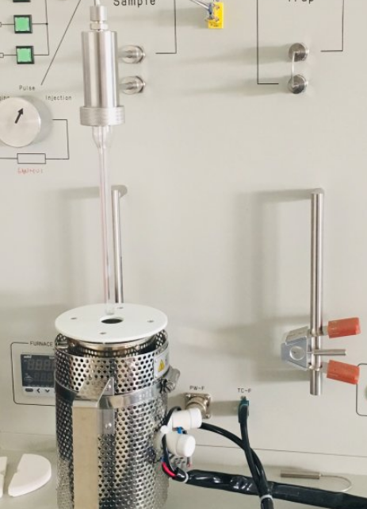
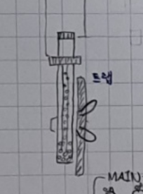
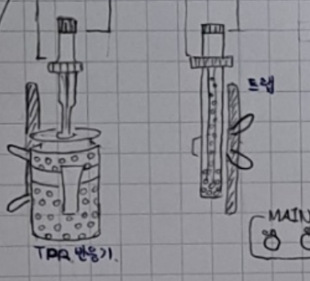
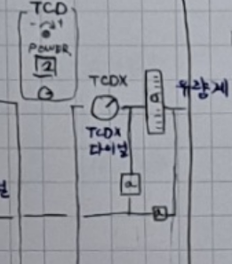
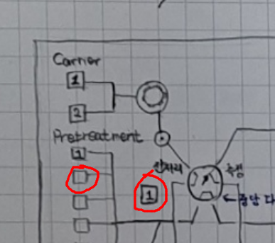

실험노트- 1 (9/3)

TPR 분석법

준비과정:
1)TPR Cell이 있는데, 오븐의 맨 왼쪽에 있다.
2)촉매 0.05g을 채우고 TPR 반응기에 결합한다. 이때 결합순서는 작은 것부터 큰 것 순으로 한다.
3)트랩의 CIEVE는 2~3번째 측정마다 교체해주어야 한다.

<상단부 사진>
원리: 측정용 가스는 불이 들어와있는게 측정용 가스다. 헬륨이랑 아르고 혼합물( 수소+아르곤?) 로 켜져있는데, 바꾸지 않아도 된다. 수소가 선따라서 샘플로 들어가 소모되고, 트랩을 거친다. 수소랑 산소가 만났으니 물이 트랩에 잡히고 PC를 통과해서 수소의 소모량이 검출되게 된다.
이후 프로그램으로 그래프를 볼 수 있는데, 디텍터는 TCD이다.
온도 그래프: 100도씨에서 출발해서 960도 정도까지 올라감. 265도쯤에서 피크가 생겨 있었는데, 이 온도에서 가장 환원이 많이 된 것이다.
쓰는법:
오븐에서 얄쌍한 TPR전용 셀을 꺼낸다. 이후 촉매를 들고와서 그릇에 이온블로워를 해주고 저울에 50mg을 잰다. 이후 TPR 셀을 TPR기기에 끼우면 된다.

기기에 보면 밑에 퍼니스가 있는데, 내릴 수 있다. 이제 뒤에 부분을 풀면 되는데, 오링피팅이라고 기체 누출 방지 안전장치가 있다. 작은거 (검정링-작은 철링-큰 철링) 순서대로 끼우면 된다.

그리고 씨브도 많이 사용하면 교체해줘야 한다. 보통 한 세 번 정도 측정을 하게 되면 바꾼다. 씨브를 빼는 것은 앞과 동일하다. 안에 들어있는 씨브는 바로 밑에 사용된 씨브 비커가 있어서 거기 부었다. 이제 새로운 씨브를 넣어야했는데, 새 씨브는 오븐에 있었다. 오븐에서 씨브가 들어있는 비커를 뻈는데 너무 뜨거워서 일단 놔두고, 이전에 이미 TPR 돌려져있던 촉매를 버리러 가기로 했다.
(촉매는 지정된 장소에 버리고, 셀을 물로 씻고, 옆에 초음파 세척기 켜서 한번 씻고 마지막 아세톤으로 씻는다. 세척이 끝난 TPR실린더를 이제 오븐에 다시 넣었는데, 앞 손잡이 잠금장치를 당기고 뒤쪽 손잡이 잠금장치를 당기고 앞쪽 손잡이 잠금장치를 놓고 닫는다.)
이후 씨브를 다시 넣기로 했다. 위 에 뚜껑 부분을 돌리고 안쪽에 있는 작은 플라스크에 넣으면 된다. 이때 위에서 봤을 때 어두운 정도까지 채우면 된다.

이제 이 두개를 확실하게 닫아서 잠근다.

잘 잠가질 경우 유량계에 50에 공이 가있다.

이후 전처리로 레버를 돌려놓고, 1번가스를 누르고, 두번째로 플로우 버튼을 누른다. 캐리어가스는 아르곤이랑 헬륨으로 했더니 수소에 TCD가 적응을 못해서 H2가스로 전처리 한다.
TPR 장비를 돌리는 프로그램은 옆에 컴퓨터에 있다. 여기서 스타트 매절먼트를 하면 되는데 , 그 전에 세팅을 확인해야 한다. 위쪽에 [미절먼트 컨디션] 버튼이 있음. 그걸 누르면 [ 측정 조건] - [ 매절먼트 시퀀스 세팅]이 있다. 전처리-퍼즈-실험 순서로 이어진다. 퍼즈가 있는 이유는 제때 제때 못 올 수도 있기 때문이다.
-35분 동안 350도까지 10도씨 퍼 미닛으로 올린다.
-60분 동안 350도 유지 -> 전처리 끝
- 1분 만에 100도씨까지 내려온다. 퍼즈
- 30분 동안 100도씨에서 멈춘다.
- 90분 동안 온도를 올려 반응한다.
파일- [로드 매저먼트 컨디션] 불러오기 - 혁원재 폴더 - 메모장 같은거 열기 - 어플라이- [ 매저먼트 스타트] - 경로지정 - 파일이름이랑 촉매 무게
요약: 매절먼트 컨디션 확인해보기- 파일 들어가서 로드 매저먼트 컨디션 누르기- 혁원재 파일거 조건 불러오기 -매저먼트 스타트 누르고 경로 지정해주고 이름과 무게 적어준 다음 스타트 한번 더 누르면 끝
이후 실험실로 돌아가서 흡착에 관한 얘기 - FCC BCC 등등 구조가 있는데, 이게 결합하는 원자수가 정해져있다. 12개든 8개든, 그런데 표면에 있는 분자는 위에가 비어있어 추가 결합이 가능해서 흡착이 가능했다는 얘기다. 이후 BET BJH방정식 등이 있는데, 흡착 현상을 이용하여 표면적 기공크기 기공부피 등등을 계산하는 방정식인데, 기계가 알아서 다 해준다.
그 다음 TPD 데이터가 나오면 노란색 파일로 저장이 되는데, 엑셀로 익스포트할 수 있고, 그걸 오리진이라는 프로그램에 넣어서 그래프를 바꿀 수 있다고 한다.